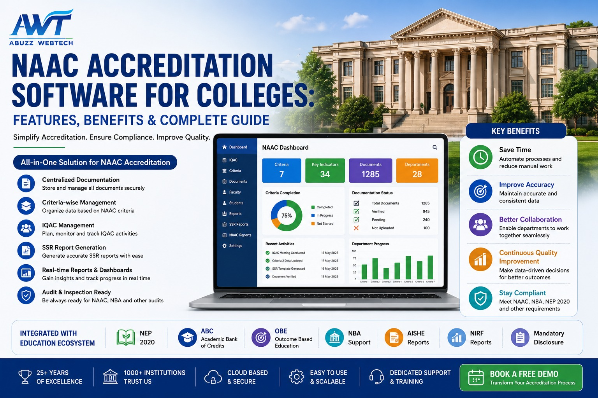

10 July 2026
NAAC Accreditation Software for Colleges: Features, Benefits & Complete Guide
Preparing for NAAC accreditation is one of the most important responsibilities for every higher education institution. Colleges must maintain accurate records, collect evidence from multiple departments, prepare reports, and comply with strict documentation standards throughout the accreditation cycle.
Managing this process manually can be time-consuming and stressful. Important files are often scattered across departments, report preparation takes days, and collecting supporting evidence at the last moment becomes a major challenge.
This is where NAAC Accreditation Software for Colleges plays a crucial role. It centralizes accreditation-related information, making it easier to organize documents, generate reports, monitor progress, and stay prepared throughout the year—not just during NAAC inspections.
What is NAAC Accreditation Software?
NAAC Accreditation Software is a comprehensive digital solution designed to simplify and manage the complete accreditation process for colleges and higher education institutions.
Instead of collecting academic, administrative, faculty, research, and student data manually from different departments, the software stores everything in one centralized platform. This ensures that institutional information is always organized, secure, and readily available whenever required.
By automating documentation and report preparation, NAAC Accreditation Software helps institutions reduce paperwork, improve accuracy, maintain compliance with NAAC guidelines, and focus more on quality education rather than administrative tasks.
Why Do Colleges Need NAAC Accreditation Software?
NAAC accreditation is not a one-time activity—it requires continuous documentation, regular monitoring, and systematic record management throughout the academic year.
Without a dedicated software solution, colleges often struggle with scattered records, inconsistent documentation, delayed report preparation, and difficulty collecting department-wise information.
A modern NAAC Accreditation Software helps institutions overcome these challenges by providing a centralized platform for documentation, reporting, and accreditation management.
It enables colleges to:
- Maintain centralized institutional records
- Organize department-wise documentation
- Generate reports quickly
- Prepare SSR efficiently
- Track supporting evidence
- Improve collaboration across departments
- Stay audit and accreditation ready throughout the year
With a single integrated platform, colleges can significantly reduce manual work, improve data accuracy, and confidently manage every stage of the NAAC accreditation process.
Common Challenges During NAAC Preparation
Preparing for NAAC accreditation requires continuous documentation, collaboration between departments, and timely report generation. Without a centralized system, institutions often face difficulties managing records and maintaining consistency across departments.
The following table highlights the most common challenges faced by colleges during NAAC preparation and how a dedicated NAAC Accreditation Software helps overcome them.
| Challenge | How NAAC Software Helps |
|---|---|
| Manual documentation | Centralized digital records |
| Data from multiple departments | Single integrated platform |
| Time-consuming SSR preparation | Faster report generation |
| Missing supporting documents | Secure document repository |
| Difficult evidence tracking | Department-wise documentation |
| Repeated data collection | Reusable institutional database |
| Last-minute preparation | Continuous data management |
Key Features of NAAC Accreditation Software
The right NAAC Accreditation Software should do much more than simply store documents. It should simplify every stage of the accreditation process, improve collaboration across departments, and help institutions stay prepared throughout the accreditation cycle.
1. Centralized Document Management
Store all accreditation-related documents securely in one centralized repository. Faculty and administrators can quickly access required files during inspections, audits, and accreditation reviews without searching through multiple folders.
2. Criteria-Wise Documentation
Organize institutional records according to the latest NAAC criteria, making documentation structured, systematic, and easy to retrieve whenever required for accreditation or internal quality reviews.
3. IQAC Management
Manage IQAC activities from a single dashboard, including meeting minutes, action plans, quality initiatives, Annual Quality Assurance Reports (AQAR), and institutional improvement activities.
4. Self Study Report (SSR) Support
Collect institutional data from multiple departments and simplify the preparation of the Self Study Report (SSR). Automated report generation significantly reduces manual effort while improving accuracy and consistency.
5. Faculty Profile Management
Maintain complete faculty information including qualifications, teaching experience, research publications, Faculty Development Programs (FDPs), certifications, awards, and professional achievements from one centralized platform.
6. Student Information Management
Track student admissions, attendance, examinations, placements, progression, scholarships, achievements, and alumni records through an integrated Student Information System (SIS), ensuring accurate data is always available for accreditation purposes.
7. Research & Publication Records
Manage department-wise research projects, journal publications, patents, consultancy work, funded projects, conferences, and other research activities in one organized repository to support NAAC documentation requirements.
8. Reports & Analytics
Generate real-time reports, dashboards, and institutional analytics for IQAC teams, management, and accreditation committees. Instant access to accurate reports enables better planning, monitoring, and decision-making throughout the accreditation cycle.
What Makes a Good NAAC Accreditation Software?
Selecting the right NAAC Accreditation Software is essential for simplifying documentation, improving institutional coordination, and ensuring continuous accreditation readiness. A reliable solution should not only manage documents but also support quality assurance, reporting, and collaboration across every department.
Before choosing a software solution, make sure it offers the following essential features:
- Easy-to-use interface
- Secure cloud storage
- Department-wise user access
- Automated report generation
- Centralized document repository
- Real-time dashboards
- Multi-user access
- Data backup & security
- Mobile-friendly accessibility
- Dedicated implementation, training & support
Choosing the right software not only simplifies NAAC accreditation but also improves day-to-day institutional management, transparency, and long-term quality assurance.
Benefits of NAAC Accreditation Software
A well-designed NAAC Accreditation Software for Colleges does much more than organize documents. It improves institutional efficiency, enhances collaboration, maintains accurate records, and helps colleges stay prepared for every accreditation cycle.
1. Save Time and Reduce Manual Work
Collecting accreditation data manually from multiple departments can take weeks. With a centralized software platform, information is updated continuously, reducing paperwork and saving valuable time for faculty members, IQAC teams, and administrators.
2. Improve Data Accuracy
Since every department works on the same platform, institutional records remain accurate, consistent, and up to date. This minimizes duplicate entries and significantly reduces errors during report preparation.
3. Simplify Self Study Report (SSR) Preparation
Preparing the Self Study Report (SSR) becomes much easier when academic, administrative, faculty, research, and student data are already organized within one centralized system. Reports can be generated quickly without searching through multiple files.
4. Better Department Coordination
NAAC accreditation is a collaborative effort involving every department. The software enables departments to update their own records while providing IQAC coordinators and management with real-time visibility into overall accreditation progress.
5. Stay Audit Ready Throughout the Year
Instead of preparing documents only before inspections, institutions can maintain accreditation records throughout the year. This ensures colleges remain ready for NAAC visits, internal audits, and other regulatory reviews at any time.
How NAAC Accreditation Software Improves Institutional Quality
The biggest advantage of implementing NAAC Accreditation Software is that it promotes continuous quality improvement rather than one-time documentation. Institutions can monitor academic performance, maintain faculty records, manage research activities, track student progression, and evaluate institutional performance through one integrated platform.
With real-time dashboards, automated reports, and centralized data management, college leadership gains better visibility into institutional performance. This enables informed decision-making, supports quality enhancement initiatives, and strengthens the overall accreditation process.
By reducing administrative workload and improving collaboration across departments, NAAC Accreditation Software helps institutions focus more on academic excellence, innovation, and continuous institutional development.
Why Choose ABuzz WebTech for NAAC Accreditation Software?
Choosing the right technology partner is just as important as choosing the right software. With over 25+ years of experience in education technology and the trust of 1,000+ educational institutions, ABuzz WebTech delivers a comprehensive NAAC Accreditation Software solution designed specifically for colleges, autonomous institutions, and universities.
Our NAAC Accreditation Software is seamlessly integrated with our powerful Education ERP, enabling institutions to manage accreditation, academics, examinations, finance, HR, student information, and administration from one centralized platform.
Whether you're preparing for your first NAAC accreditation or working towards improving your institutional grade, ABuzz WebTech provides the tools, technology, and support needed to simplify the entire accreditation journey.
What Makes ABuzz WebTech Different?
- 25+ Years of Experience in Education Technology
- Trusted by 1,000+ Schools, Colleges & Universities
- Complete NAAC Accreditation Management Solution
- IQAC Documentation & AQAR Report Support
- Criteria-wise Data & Document Management
- Self Study Report (SSR) Preparation Support
- Faculty Profile & Research Management
- Student Information System (SIS)
- Academic & Examination Management
- NAAC & NBA Compliance Support
- NEP 2020 Ready
- Academic Bank of Credits (ABC) Integration
- Outcome-Based Education (OBE)
- On Screen Marking (OSM)
- Mandatory Disclosure Management
- Cloud-Based & Mobile-Friendly Platform
- Dedicated Implementation, Training & Technical Support
Our mission is simple—to help higher education institutions simplify accreditation, improve academic quality, streamline administration, and build a smarter, technology-driven campus.
Ready to Simplify Your NAAC Accreditation Process?
Looking for a reliable NAAC Accreditation Software for Colleges?
Abuzz WebTech offers a comprehensive, cloud-based solution that helps colleges manage accreditation, documentation, IQAC activities, institutional reporting, faculty records, and compliance from a single integrated platform.
Backed by 25+ years of industry experience and trusted by 1,000+ educational institutions, our solution is designed to support your institution at every stage of the accreditation journey.
Discover how ABuzz WebTech can help your institution become accreditation-ready with confidence while simplifying documentation, improving collaboration, and enhancing institutional quality.
Frequently Asked Questions (FAQs)
1. What is NAAC Accreditation Software?
NAAC Accreditation Software is a digital solution that helps colleges manage accreditation-related documents, faculty records, research data, student information, IQAC activities, and institutional reports from one centralized platform.
2. How does NAAC Accreditation Software help colleges?
It simplifies documentation, improves data management, reduces manual work, automates report generation, and helps institutions prepare for NAAC accreditation more efficiently while maintaining continuous compliance throughout the year.
3. Can NAAC Accreditation Software generate Self Study Report (SSR)?
Yes. A comprehensive NAAC Accreditation Software organizes academic, administrative, faculty, research, and student data, making Self Study Report (SSR) preparation faster, easier, and more accurate with minimal manual effort.
4. Is the software suitable for autonomous colleges and universities?
Yes. NAAC Accreditation Software is ideal for autonomous colleges, affiliated colleges, universities, deemed universities, and other higher education institutions preparing for NAAC accreditation, quality assessments, and regulatory compliance.
5. Can NAAC Accreditation Software integrate with an ERP system?
Yes. Modern NAAC Accreditation Software integrates seamlessly with ERP modules such as admissions, academics, examinations, finance, HR, library, research management, and Student Information System (SIS), ensuring all accreditation-related data is available from one centralized platform.
Conclusion
NAAC accreditation is not just about submitting documents—it is about building a culture of continuous quality improvement within the institution. Managing this process manually becomes increasingly difficult as academic, administrative, and research data continues to grow every year.
A modern NAAC Accreditation Software for Colleges simplifies documentation, streamlines report generation, improves collaboration between departments, and keeps institutions prepared throughout the accreditation cycle. By centralizing information and automating routine processes, colleges can reduce administrative workload while focusing on academic excellence and institutional development.
If your institution is preparing for NAAC accreditation or looking to strengthen its quality assurance processes, investing in the right NAAC Accreditation Software can make the entire accreditation journey simpler, faster, and more efficient.